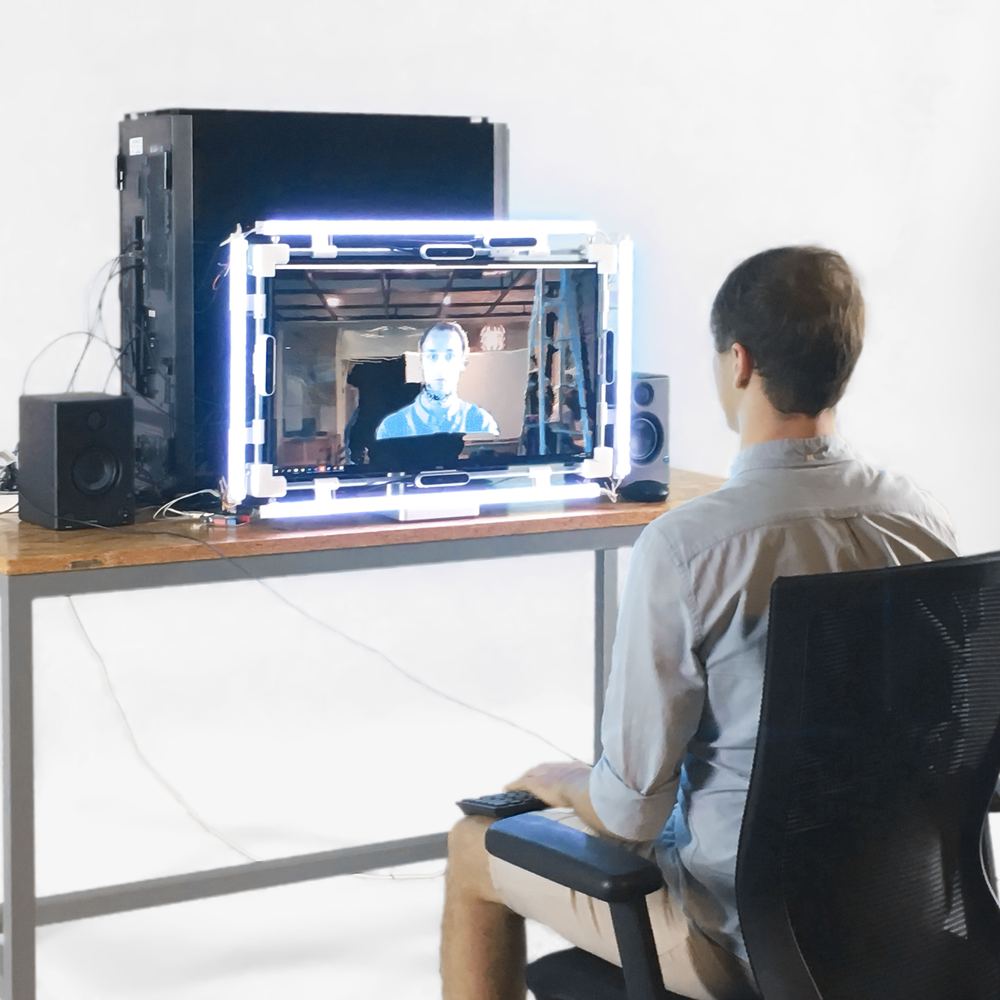
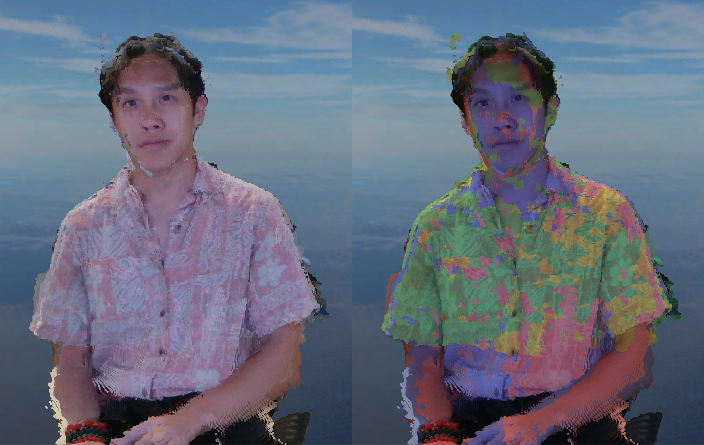

TeleWindow
├── Software -> C++ / Unity / Python / OpenCV
└── Display -> SeeFront Stereoscopic / Eye-tracking
• Principal Investigator: Michael Naimark
• Team: Cameron Ballard, Barak Chamo, Ivy Huang, Grace Huang, Mateo Juvera Molina, Ada Zhao, Bruce Luo
• Four-camera array for complete volumetric coverage
• Real-time point cloud fusion and perspective correction
• Eye-tracked stereoscopic output supported via SeeFront volumetric display

Early single camera prototype
TeleWindow is a finished experimental telepresence research project conducted under the guidance of Michael Naimark. The aim was to explore how a two-way, one to one communication system can be developed and how this system can aid communication in the digital age. Utilizing these different ingredients, we can prototype a device that can offer features such as two-way eye contact, stereoscopy, and telepresence. All done in realtime.

Currently, we are using four Intel RealSense cameras in order to create a volumetric pointcloud representation of a person, and then we correct perspective based on the head/eye positions of the user. The stereoscopic eye-tracked volumetric display was acquired through SeeFront.

Four camera coverage demonstrated through multicolor splat.

Diminishing occlusions through multi-cam coverage.

Rough real life environment capture. Monoscopic view for demonstration.

Demonstration of realtime movement and capture in the rendered virtual environment.